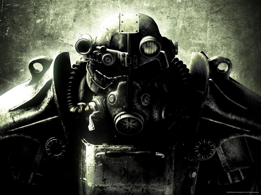
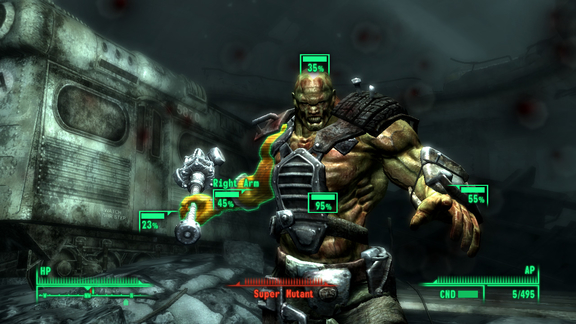

Summary
About
Fallout 3 is a first person, open world role-play video game developed by Bethesda Game Studios (USA). It takes place in the year 2277, 200 years after a war between USA and China that lead to a nuclear apocalypse, in a scaled region consisting of the ruins of Washington, D.C. In the game, you play as an inhabitant of a vault created to protect people from the nuclear fallout. You venture out into the map looking for your father, who disappeared under mysterious circumstances. You try to complete his work, but throughout the game, you face the Enclave, the corrupt remnants of the former U.S government that seek your father’s job to use it for their purposes. 
Gameplay
While the game had the normal health bar that we see in most video games (HP), it also had a "Limb" health bar, that would damage a specific part of the body, such as the legs, head and arms. If the Limb healthbars got damaged, then the player would be affected by a negative status effect. For example, if your legs got damaged, your movement speed would be reduced. Another aspect of the gameplay that made the game more complex is that guns would degrade over time the more they are used, becoming less effective. This also apllied to armor, which after being used for a determined amount of time, would protect you less from damage. But both weapons and armor could be repared with the parts needed, or by giving them to a vendor with the skills needed to repair them.
The game also introduced a new element for the completely new real-time combat that Fallout 3 offers: the V.A.T.S. This mechanic allowed you to stop time during the combat to see how much damage to dealt to the enemy's limbs and the chance of striking in each area of the body. A hit in V.A.T.S allowed you to slow the enemy down or get a fast kill (since shooting the limbs was easier and more effective in this mode).
Legacy
Major shift
This video game marks a major shift in the series, switching from its old 2D graphics with turn-based combat to the new 3D graphics and real-time combat, completely changing the series’ style and game play forever. It won multiple awards from different websites and game journalists, and is considered one of the best video games of all time, making it to lists like “Best Video and Computer Games of the Decade” from IGN.